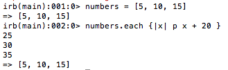
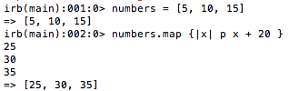

Enumerables!? Isn't that like when something is too high to count? Actually, in ruby, enumerables are actions (methods in the lingo) that help us to iterate over individual elements in an array. We're going to talk about one of those methods called '.map'. If you're already familiar with the method '.each', then you're going to notice how similiar the two are.
Sure! So, if you've seen '.each', it goes over one element at a time in array and does whatever is in the code block. Well, '.map' does that too! Except that while '.each' returns the original input it was given, '.map' returns a new array with the result of the code block
Absolutely. On the top you will see an example of '.each' and the bottom will show '.map'

